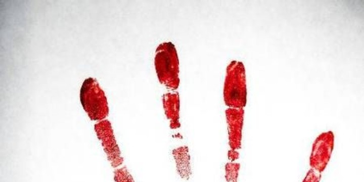
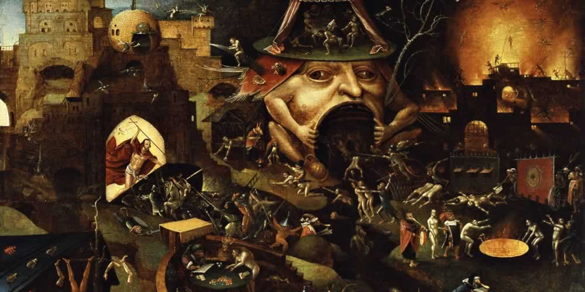

Let’s face it: a great deal of published horror fiction — especially on the “extreme” fringes — is poorly written and edited (if it’s edited at all). I mean on the most fundamental, grade-school levels of writing craft: grammar, spelling, knowing the meanings of words you’re writing. Even the good stuff published by “name” authors is frequently riddled with typos and clunky missteps that should have been proofread and revised out before being offered for sale.
The depressing thing is, almost all of the crappiness is totally avoidable. Authors should be revising and proofreading. Publishers should be editing. Everyone involved should be giving a shit about putting out polished prose, if for no other reason than professional pride. But they apparently aren’t — especially the small presses, some of which don’t seem to even be reading the manuscripts they’re hustling into print, let alone editing them.
It stinks on its own merits, and it stinks even more for publishers to present this shoddy work to the public, to expect readers to pay money for it, and to expect us to overlook the laziness. It’s insulting to me as a reader and customer. One of my motivations for starting Redflesh was to fight the good fight against this kind of bullshit, and to encourage other horror fans and bloggers to insist upon some basic standards and to point out when those standards have been failed.
(Bear in mind, again, that I’m not talking here about excellence. I’m not demanding that all horror writing compare favorably to, say, Salman Rushdie’s work. I’m merely asking for a basic standard of clean text and readable prose.)
As part of this mission, I’m introducing a regular featured called The Redflesh Workshop. In this (one-sided) workshop, I’ll be taking a close look at a piece of writing that is flawed in some important way(s), discussing those flaws, and pointing out how they could have been remedied.
I’m not doing this to insult the author or the work. At some point I’ll be giving this treatment to prominent authors whose work I love and admire (and hopefully giving them a good laugh if they should ever come across it). I intend to do my best to be respectful in my criticisms, but I’m not gonna lie, I’ll be blunt, and I’m not above making fun of an especially lame bit of writing.
Note: I’ve decided at least provisionally to include the author’s name and the title of the work in these critiques, but if you are one of those authors and would like your work removed, please contact me and I will be happy to do so with no hard feelings.

I enjoy reading, and blogging about what I’m reading at places like my regular blog. My interests are far-ranging, but one strong interest of mine is horror, and in particular the kind of horror that’s often referred to as “extreme” or “splatter” horror.
I feel weird blogging about that material, and other kinds of writing one might call transgressive, on a blog that my friends who aren’t into that stuff read, and where the typical person stumbling across my blog isn’t necessarily expecting it. So I started Redflesh as a place to think about this stuff out loud, hopefully to an audience that shares my interest.
I enjoy horror fiction for much the same reason that I enjoy science fiction or just fiction itself — a fascination with the unknown, and especially with the experience of finding oneself at the extremities of human existence. I’ve felt plenty of fear in my life, and experienced shocks galore, but nothing outside the realm of everyday life for a sheltered American middle-class child of the suburbs.
What do people think and feel, when they’re in situations far beyond anything I’ve known, that push them to the limits of sanity — and beyond? What’s inside the minds of killers, of the violently insane, of victims of unimaginable violence? Actions I can’t even imagine myself taking — how does one get to a place where those actions are as mundane as lighting a cigarette? Where does your mind go, when the worst pain you’ve experienced is a splinter in your toe, and now you’re being hacked to death with an axe?
It’s curiosity, the compulsion to turn over the rock, to open that cardboard box in the dumpster with the bloody fingerprints on it. To look into the abyss, and not just into it, but beyond, to whatever lies beneath the abyss.
I intend to write mostly about horror fiction, but will write about horror films if the mood strikes. I didn’t make this a general horror blog because for the most part I don’t have much to say about horror cinema. I enjoy a good scary movie, but I’m more interested in character than being shocked, so a horror film needs to have a little more going on to keep me thinking about it past the end credits.
My taste in horror stories tends towards more realistic or psychological horror than supernatural horror. Not that I can’t enjoy a zombie or vampire story, or even the occasional ghost story, but since I read this stuff more for its insights into human nature than to be scared (although I do love to be scared), the more unlikely the premise, the less relevant it is to my interests.
Be advised, too, that I’m difficult to please as a reader. I’m sensitive to writing that’s sloppily executed, or is more about atmosphere and effect than character, or in some other way bounces the check the author wrote. When a story starts to smell like bullshit, I generally bail.
I also prefer short horror fiction to novels, so there will likely be more coverage of short stories and story anthologies here than of book-length stories. I have enjoyed horror novels and will definitely write about them, but most that I’ve encountered can’t sustain its mood over the long haul, and many of them are padded, drawn-out slogs that obviously would have worked much better in 4,000 words than 40,000.
I’m also going to do my best to seek out horror fiction by women and people of color. Not just because those groups tend to be underrepresented in horror, but because, since those groups are underrepresented, their voices and sensibilities are often refreshingly different and original, especially given how stale and formulaic so much of horror fiction can be.
I hope you enjoy reading this blog. (I hope I can actually keep writing it!) Feel free to contact me at ed@edwardsung.com, or on Twitter.

Shortly after the beginning of WWII, a young Jewish boy is placed in hiding by his parents, with a peasant woman in the Polish countryside. When his guardian dies, the boy is left to wander from village to village, encountering horrific acts of brutality and depravity among the paranoid and xenophobic peasants.
I‘ve had Jerzy Kosinski’s 1965 novel The Painted Bird on my shelf for a while now, and finally got around to reading it. I had been avoiding it because of its reputation as a highly disturbing, depressing novel. Not that I’ve got anything against disturbing and depressing, but I was feeling kind of down recently, and didn’t really need a foot pushing my head down into the quicksand.
Anyway, I’m feeling much better now.
Read enough horror fiction, and you become inured to horror in fiction. You’ve bathed in the carnage and butchery and Unnameable Horrors for so long that, while you can still be disturbed and terrified, it’s harder to be shocked and repulsed. You’re like, “Oh, they’re skinning him alive while blowtorching his genitals? Yes, very horrifying. I am so nauseated. Please. No more.”
So, from an “extreme horror” fan’s point of view, The Painted Bird is a little underwhelming. Not to say that it isn’t a nonstop cavalcade of murder, mutilation, rape, sexual sadism, rape, and rape, but aside from one genuinely unsettling incestuous orgy involving a goat, the presentation looks a bit quaint to these jaded eyes. The novel works best when it depicts moments of mundane brutality — a jealous farmer carving out a young man’s eye with a soup spoon, or our boy protagonist being hung from hooks above a vicious dog — with frosty indifference.
The Painted Bird is a pitch-black picaresque — or perhaps more accurately an anti-picaresque — that follows our young narrator as he stumbles from one harrowing situation to another. With few exceptions, the characters he encounters are either ignorant, sadistic brutes or their ignorant, hapless victims. What thematic through-line there is has to do with the narrator’s search for meaning in this bleak world. Is God the key to survival? If not, then perhaps Satan? Atheism? Communism? Or to hell with all of that in favor of anarchic sociopathy?
These existential questions aren’t given enough reflection in the story to become very interesting. Each of the narrator’s philosophical paths are set up only so they can be bitterly demolished. Communism is the only world view that eventually gets the boy fired up for any length of time, but not for much more defined of a reason than that the Communists he meets aren’t, for the most part, complete assholes.
The Painted Bird is readable enough, but doesn’t add up to much more than a nihilistic wallow in man’s inhumanity to man. If you enjoyed Cormac McCarthy’s The Road, this is very much in the same brutal family of “people suck, the end” stories that relentlessly hammer home the most cynical possible vision of human society.
For Skattie.